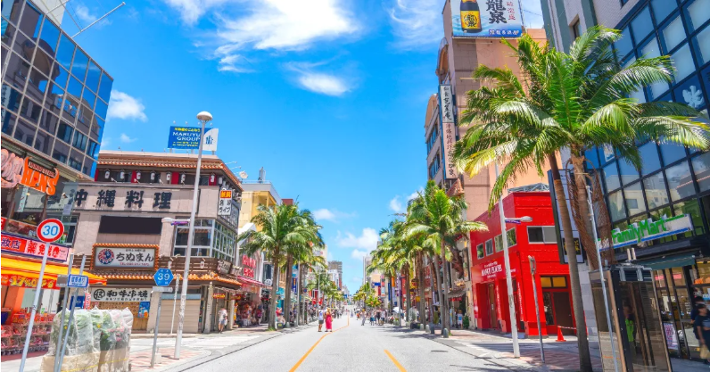
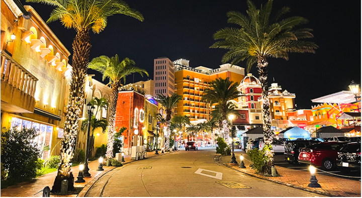

ジンベイザメが泳ぐ大きな水槽が人気です。 沖縄を代表する観光スポットです。
美ら海水族館のホームページはこちら
戦後の焼け野原から目覚ましい発展を遂げ、その長さがほぼ1マイルであったことから「奇跡の1マイル」とも呼ばれています。 通り沿いには約600ものお土産店、飲食店、ホテルなどが建ち並び、沖縄観光の中心地として絶えず賑わっています。

アメリカ西海岸を思わせるカラフルな街並みが魅力です。広大な敷地内に約200店舗ものショップ、カフェ、エンターテインメント施設がぎゅっと詰まっており、 異国情緒あふれる空間を1日中満喫できます
アメリカンビレッジのホームページはこちら ホームに戻る